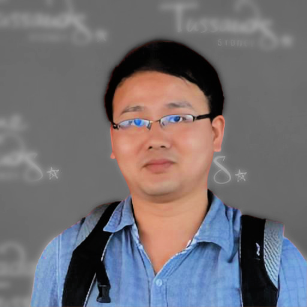

Zhiwu Huang

I am a Lecturer (Assistant Professor) in the School of Electronics and Computer Science at the University of Southampton . I research autonomous computer vision for artificial general intelligence. My ultimate quest is to empower machines with rational, emotional and imaginal intelligence. The currently focused methodologies include task scaling, language prompting, and adversarial learning.
I am looking for motivated and talented PhD students to join my research group. Please follow the instructions to reach me if you are interested. Short Bio...Zhiwu Huang is a Lecturer (Assistant Professor) in the School of Electronics and Computer Science at the University of Southampton. He worked as an Assistant Professor of Computer Science at Singapore Management University (SMU). He was a Guest/Postdoc Researcher at ETH Zurich, working with Luc Van Gool. He pursued his Ph.D. degree at the University of Chinese Academy of Sciences, advised by Shiguang Shan. He obtained his master and bachelor degrees from Xiamen University and Huaqiao University respectively. His research studies autonomous computer vision that aims for making machines to learn the visual world, all by themselves. His current focus is on visual deepfake, affective and behavior computing through automated machine learning on data, label, feature, neuron and task. His research finally aims for artificial general intelligence with rational, emotional and imaginal capabilities. He serves as reviewers for major conferences and journals in computer vision, machine learning, and artificial intelligence. He has also led the organization of multiple workshops in conjunction with CVPR, ICCV and ECCV. |